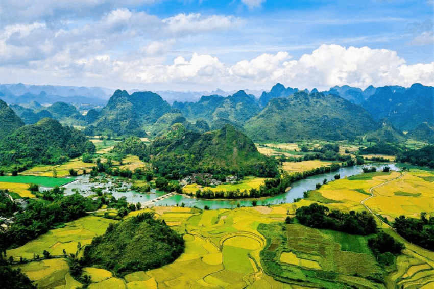
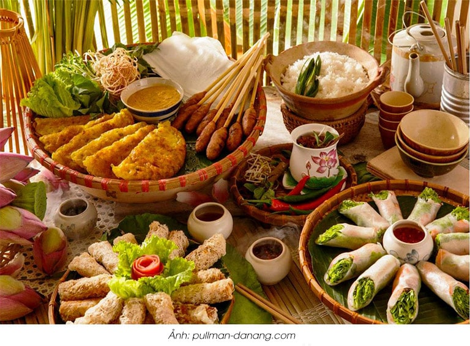

ĐIỆN BIÊN PHỦ | VÙNG ĐẤT LỊCH SỬ (3N2Đ)
3.200.000 vnđ
Giới Thiệu
Điện Biên là một trong những vùng đất chứng kiến lịch sử vẻ vang của dân tộc. Đây được biết đến là vùng đất có lịch sử hào hùng, trong đó nổi bật nhất là địa danh gắn liền với chiến thắng Điện Biên Phủ “lừng lẫy năm châu, chấn động địa cầu”. Đến đây, du khách không chỉ được chiêm ngưỡng vẻ đẹp thiên nhiên kỳ thú nơi đây mà còn được tự mình trải nghiệm thời đại hào hùng ấy.
Không chỉ vậy, khi đã đến Điện Biên - một mảnh đất thuộc khu vực núi rừng Tây Bắc, du khách nên khám phá các món ăn đặc sản của người dân tộc ở Điện Biên nơi đây. Những món ăn được chế biến rất cầu kỳ, nhất là nghệ thuật sử dụng các loại gia vị độc đáo của núi rừng Tây Bắc. Xôi nếp nương, thịt trâu hun khói,... là những món ăn đặc sắc khi đặt chân đến vùng đất Điện Biên Phủ lịch sử.
Lịch Trình
HỒ CHÍ MINH - ĐIỆN BIÊN
Sáng: Đại diện của Đất Việt Tour đón khách tại điểm hẹn, cảng nội địa sân bay Tân Sơn làm thủ tục đáp chuyến bay đi Điện Biên dự kiến SGNDIN QH1592 10:20 – 12:40.
Đến Điện Biên xe đón đoàn dùng bữa trưa tại nhà hàng. Về khách sạn nhận phòng nghỉ ngơi.
Chiều: Quý khách tham quan:
Nghĩa Trang Liệt Sỹ Đồi A1 - trở thành công trình văn hóa-lịch sử, hội tụ tính trang nghiêm, bền vững, thẩm mỹ, có kiến trúc và quy mô rộng lớn, phù hợp với tầm vóc của Chiến thắng Điện Biên Phủ năm 1954
Tượng Đài Chiến Thắng Điện Biên Phủ - tượng đài bằng đồng được xây dựng trong dịp kỷ niệm 50 năm chiến thắng lịch sử Điện Biên Phủ. Được đặt trên đồi D1 đây là công trình văn hóa, nghệ thuật mang đậm giá trị lịch sử, nhân văn và tâm linh sâu sắc, niềm tự hào của nhân dân các dân tộc tỉnh Điện Biên.
Tối: Ăn tối tại nhà hàng Dân Tộc Quán - thưởng thức các món ăn truyền thống của người dân tộc Thái. Quý khách tự do dạo chơi khám phá Thành Phố Điện Biên Phủ về đêm
ĐIỆN BIÊN PHỦ - MƯỜNG PHĂNG
Sáng: Đoàn dùng bữa sáng tại nhà hàng. Khởi hành tham quan Mường Phăng.
Sở chỉ hủy chiến dịch Điện Biên Phủ - Đây là nơi Đại tướng Võ Nguyên Giáp vẫn thường làm việc và nghỉ ngơi trong chiến dịch Điện Biên Phủ đã làm nên chiến thắng “lừng lẫy năm châu, chấn động địa cầu”
Trưa: Đoàn dùng cơm trưa tại nhà hàng.
Chiều: Tham quan các danh lam thắng cảnh nổi tiếng
Bảo tàng chiến thắng Điện Biên Phủ - nơi tôn vinh giá trị lịch sử của chiến thắng lừng lấy 5 châu, chấn động địa cầu là một trong những điểm đến vô cùng ý nghĩa.
Tối: Xe đưa đoàn đến Bản Mển - một điểm du lịch cộng đồng hấp dẫn, nơi tập trung nhiều người dân tộc Thái sinh sống. Quý khách dùng bữa tối và tham gia giao lưu văn hóa: múa quạt, nhảy sạp, múa xòe,… với cộng đồng người dân tộc Thái.
ĐIỆN BIÊN - HỒ CHÍ MINH
Sáng: Quý khách dùng bữa sáng. Khởi hành đi tham quan:
Cánh đồng Mường Thanh - Đây là đồng bằng giữa núi lớn nhất vùng tây bắc Việt Nam với câu truyền khẩu từ xa xưa: “Nhất Thanh (Mường Thanh – Điện Biên Phủ), nhì Lò (Mường Lò – Yên Bái), tam Than (Mường Than – Lai Châu), tứ Tấc (Mường Tấc – Sơn La) để nói về 4 vựa lúa trù phú và có gạo ngon bậc nhất miền Tây Bắc.
Hầm Đờ Cát - Căn hầm lịch sử này ngoài là nơi tướng Đờ Cát chỉ huy chiến đấu ra thì cũng là địa điểm đón tiếp nhiều nhân vật cấp cao như: thủ tướng Anh Winston Churchill, tổng thống Mỹ Dwight Eisenhower, thủ tướng Pháp Joseph Laniel cùng với nhiều nhà báo nổi tiếng toàn thế giới
Cầu Mường Thanh – quân Pháp gọi là cầu “Prenley”, là cây cầu bắc qua sông Nậm Rốm, ở địa điểm cách ngã ba đường 279 hiện nay khoảng 300 m. Cầu là một công trình quân sự nằm trong phân khu trung tâm của tập đoàn cứ điểm Điện Biên Phủ.
Trưa: Đoàn dùng bữa trưa tại nhà hàng.
Sau bữa trưa xe đưa quý khách ra sân bay Điện Biên, đáp chuyến bay DINSGN QH1591 13:10 – 15:30 về lại Sài Gòn, Kết thúc chuyến tham quan chia tay, chúc sức khoẻ quý khách và hẹn ngày gặp lại.
Dịch Vụ
Giá Bao Gồm:
- Vận chuyển: Xe du lịch từ 16 đến 45 chỗ đời mới máy lạnh, phục vụ suốt tuyến.
- HDV: Đoàn có HDV tiếng Việt thuyết minh và phục vụ Đoàn tham quan suốt tuyến
- Bảo hiểm: Bảo hiểm du lịch theo quy định của Bảo hiểm
- Quà tặng: Nón du lịch Đất Việt, Nước đóng chai, khăn ướt
Không Bao Gồm:
- Tiền TIP cho HDV + Tài xế địa phương
- Cáp treo FanSipan